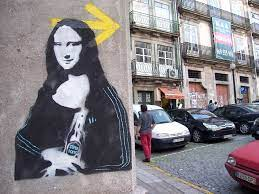
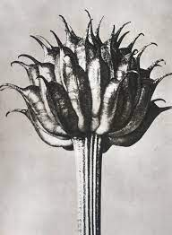

LA ESTETIZACIÓN DE LA VIDA Y LA SOCIEDAD CONTEMPORANEA
Para ser sincero este tipo de temas son algo difíciles de entender tanto así que uno podría pasarse pensando durante horas y aun así no tendrías ni un solo párrafo de este tema, esto se debe a que no conocemos este concepto o no se habla mucho del mismo, pero ¿Por qué nos ocurre esto? Se supone que nosotros estamos viviendo la estetización de la vida misma, ¿Por qué nos cuesta pensar en su significado o en como nos afecta? ¿o será que simplemente no la necesitamos?
Como no puedo quedarme con las dudas de este tema es necesario investigar sobre este y citar a varios que comprenden algo de este tema, de como nosotros lo vemos y como nos afecta en nuestro día, también para responder si esta es necesaria verdaderamente o no, después de eso tendremos que indagar en la sociedad contemporánea pero primero lo que no sabemos y después lo que sabemos.
Hablemos primero de la estética esta surge en el siglo XVIII por Alexander Gottlieb Baumgarten este describe este concepto en su poema reflexiones filosóficas (1735), lo describe como la ciencia de lo sensible, así como de las relaciones que existe entre el arte y la belleza, con este pequeño concepto podríamos deducir que cuando estatizamos la vida cotidiana seria aplicar la estética en lo que vivimos, ya sea en nuestra forma de pensar, de escribir, de actuar, y tiene sentido que se aplique en todo momento o en gran parte de nuestra vida hasta este ensayo está siguiendo unas normas las cuales lo hacen ver más presentable para su lectura, lo que puede inferir que estoy aplicando de cierto modo algo de estética, ahora como la estética aborda todos los temas cotidianos también podemos hablar de las diferentes economías y de cómo nos vemos en estas tal como lo dice en la introducción de La estetización del mundo de Gelles lipovetsky una de las frases que más me intereso de esta introducción fueron.
“Ya no estamos en la época en que la producción industrial y la producción cultural remitían a universos separados, radicalmente inconciliables; estamos en el momento en que los sistemas de producción, distribución y consumo están impregnados, penetrados, remodelados por operaciones de naturaleza fundamentalmente estética.” Pag. 9 la estetización del mundo.
Ahora ya vemos que es necesario la estetización de la vida, pero todavía nos falta la sociedad contemporánea, que podríamos decir que es algo más fácil de explicar pues estamos en ella, se destaca por el crecimiento de la sociedad como tal por medio de la tecnología y la comprensión de los varios individuos que están en esta, la prioridad de la sociedad contemporánea son los grupos de minorías así poder resolver los problemas de estos, otra característica es la conexión tanto nacional como internacionalmente.
Con esto llego a la conclusión que además de ser necesarios estos dos conceptos en la actualidad en la que vivimos tiene una gran importancia para la realización personal como en comunidad caracterizándose mejor en la segunda, pues estas le dan una forma mas definida al tiempo a la forma de pensamiento y la forma de expresarse, por lo que son necesarias y aunque no se habla tanto de ellas siempre están ahí.